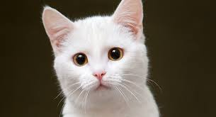

Snow was the very first pet I owned. She was a little kitten when I took her home. She had two siblings, each of whom were taken home by my friends. Snow's fur was pure white, hence her name.

Snow was always very playful and always like sitting on people's heads or around their shoulder. She hated sleeping alone and would always snuggle next to you or sneak into the bed at night. She was the cutest little fur ball.
Her favourite foods included
It was all fun and games until she ate one of the newly hatched chicks. This was not a very good day.